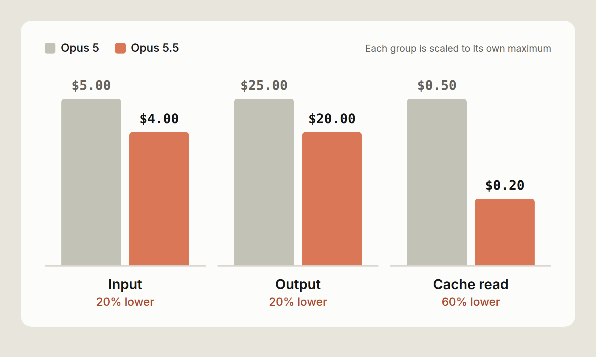
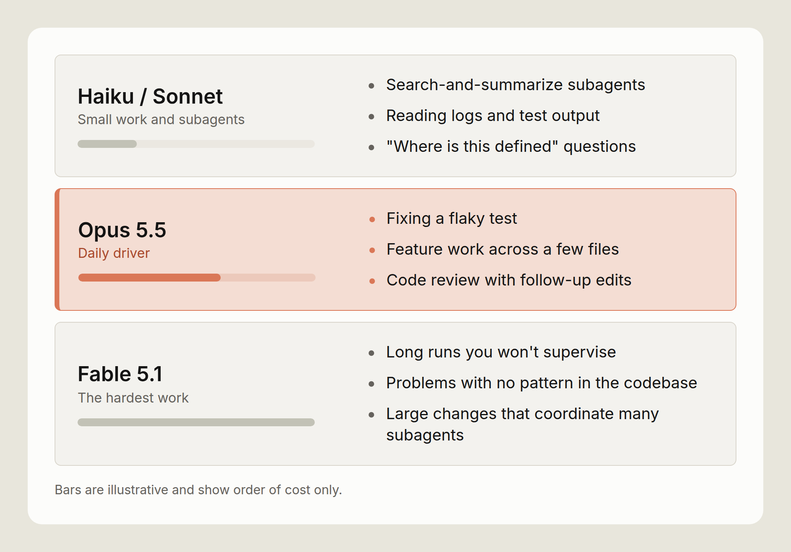
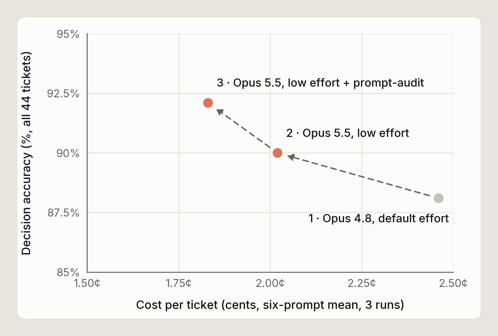
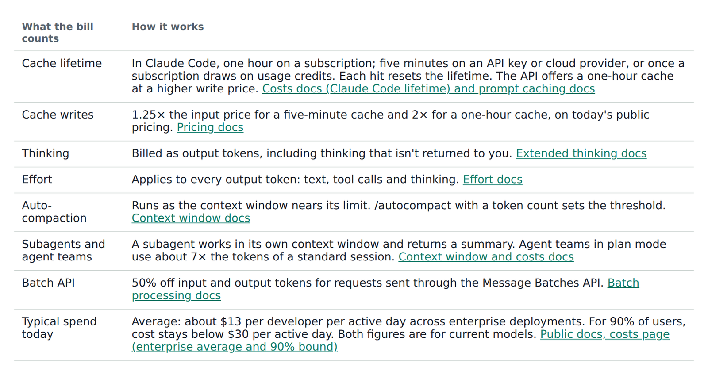

The cost of a task, and the cost of a retry
You don't set out to buy millions of tokens. You set out to build a feature, finish a migration, or run a task. The token count is whatever the model needed to get there.
Two models with the same cost per token can cost very different amounts on the same task. One reads the code once. The other reads it, tries a fix, and reads it again. Each of those steps is a turn, and each turn resends the conversation so far. So the model that needs more turns costs more, even at the same price.
By the end of this post you should be able to answer three questions about your own work:
- What do my typical tasks cost me on Opus 5.5?
- Which settings change that, and by how much?
- How do I check my own session usage?
The tradeoff I want to share upfront is that every way to spend fewer tokens can also cost you a finished task. Lower effort, a smaller model, or less context can all certainly save tokens. A retry costs more than those savings. This post attempts to put a price on each tradeoff.
Some numbers here are list prices, and some are illustrations built from them. The figures are interactive, so change the inputs as you read. These are best effort illustrations, so be sure to check our docs and your own math.
What does a task cost?
A task in Claude Code is a loop. The model reads the conversation, calls a tool, reads the result, and goes round again until it's done. Each trip round the loop is one request. Four things set what the loop costs.
Turns. Every turn resends the conversation so far. Fewer turns means less input processed.
Cache reads. Most of what a turn resends is text the model saw on the previous turn. It's billed as a cache read, at a small fraction of the input price.
Output token type. The most expensive tokens, at five times the input price. Thinking is billed as output, so a model that reasons less on the way to the answer costs less.
Model. Each model has its own prices, listed on the pricing page, so the model you pick sets the price of every token.
Our examples use Opus 5.5 API list prices: $4 per million input tokens, $20 per million output tokens and $0.20 per million cache reads. Like the calculator further down, the examples bill cached input at the read price and everything else at the input price, and leave out cache writes. The token counts are illustrations.
Turns
Let’s say a task starts with 20K tokens of context and grows to 120K as the model reads files and tool results. At 40 turns, the average turn sends about 70K tokens. That's about 2.8M input tokens for the task, though the conversation never grew past 120K. With 90% read from cache, the input costs about $1.62. The same task in 25 turns processes about 1.75M tokens and costs about $1.02 in input.
A turn costs more than the tokens it adds, because it resends everything before it. So the cheapest turn is the one you don't need.
One habit that can cut turns is giving the model a way to check its work. For example, a test to run, a build, or a script that calls the endpoint. A model that can check its own work finds its mistakes earlier.
A model that gathers what it needs in one pass, and batches its tool calls, pays the resend fewer times too.
Cache reads
The same 2.8M input tokens cost $11.20 if none come from cache. At a 90% hit rate they cost $1.62, and at 96% about $0.99. No other setting moves input cost this much. A steady session keeps a high hit rate on its own. I cover some actions to avoid breaking your cache later in this post.
Output tokens
On Opus 5.5, an output token costs 100 times a cache read. The 60K output tokens of a typical task cost $1.20, the same as reading 6M tokens from cache. Output includes thinking. You pay for all of it, even when Claude Code only shows you a summary. That's why effort, which mostly changes how much the model thinks, moves the bill so much.
Model
A model with cheaper cache reads mostly helps long sessions. One with cheaper output mostly helps tasks that need a lot of reasoning.
What changed in Opus 5.5
Two things changed: the price, and how much work the model does.
Every price line is lower. Input and output tokens are 20% cheaper than on Opus 5. Cache reads are 60% cheaper. The input price falls, and the read rate falls with it, from a tenth of the input price to a twentieth. Fig A compares the two models per million tokens. These are API list prices. On a Pro, Max or Team plan, the lower Opus 5.5 price is passed on to your limits, including cached context, so they go about 25% further than on Opus 5. The extra cut on cache reads is an API price change.

On an API key, the cache-read price cut matters most for Claude Code. A long agentic session spends most of its input on cache reads. In the session priced in Fig B below, the cache line falls from $1.00 to $0.40, the largest drop on the receipt.
How much you save depends on the shape of your work. A session that is mostly cache reads can save up to 60% on input. A short question with no cache and a long answer can save up to 20%, because output dominates it. Most Claude Code tasks sit between the two. The calculator below shows where yours sits.
Opus 5.5 can use more tokens on an answer, because it always thinks before it replies. We expect people to get more done on Opus 5.5, but it varies by task, so measure it on your own work. Fig C compares cost per task on the two models. This part depends on your work far more than the price does.
On a well-scoped task, both models finish in about the same number of turns, and the price cut is all you get. The gap should be biggest on open-ended tasks, where a model can spend many turns on the wrong idea. No single number holds for every codebase, so measure it (see the last section).
Long runs end with a report. Opus 5.5 closes a long run with what it changed, what it found, and what it needs from you. That can save money too, because you rerun a session less often when you can see what happened.
The same tasks side-by-side
Fig B prices one session on both models with the same token counts. So the difference is the price change and nothing else. Switch models to compare. The token counts are illustrative.
Fig B · One task, two models (receipt toggle). Self-contained Webflow embed. $3.50 at Opus 5 list prices Fig B. Illustrative session with the same tokens on both models, so this is the price change alone.
Fig B. Illustrative session with the same tokens on both models, so this is the price change alone.
The receipt has the three lines /usage shows for a session. Cache reads are the biggest line by tokens, at 2M. Output is the smallest by tokens and the biggest by cost. Fresh input sits between them. It covers the first read of each file and each new tool result.
Fig B gives both models the same token counts, so it shows the price change alone. Your own sessions can use more or fewer tokens on Opus 5.5. Priced that way, the session costs about 31% less.
A recorded run adds the second effect, the change in how much work the model does. On a task with a false start, the gap should widen. Try your own numbers
Set what one of your tasks uses, or start from a preset. The presets are pretty illustrative but I’d still recommend doing your own math. Cached input bills at the cache-read price and fresh input at the input price, so the cache slider shows how much of the gap comes from cache reads.
To fill the sliders from a real session, run /usage at the end of a task. The Session block gives input, output and cache figures. The last slider is your assumption about how much less work Opus 5.5 does on your tasks. Leave it at 0% for the price change alone. To set it from your own work, here's how: run the same task on Opus 5 and on Opus 5.5, and compare turns and output tokens. Measure it yourself walks through it, and Reading a session shows what to check in /usage.
Try your own numbers (cost calculator). Self-contained Webflow embed. Input tokens per task Everything sent to the model across all turns, cached or not. Read from cache Output tokens per task Includes thinking, which is billed as output. Tasks per day Fewer tokens on Opus 5.5 (your assumption) Leave at 0% for price alone. Opus 5.5 does more with fewer tokens, but measure that on your own tasks. Opus 5 per task–– Opus 5.5 per task–– Change per task–– A month is working days. List prices. No batch or volume discounts, and cache writes are not counted (see the caching section below).
Tips for maximizing the value of your session
Opus 5.5’s lower price makes each token cost less. How you run a session decides how many tokens you use, and these steps help.
Raise effort before you change models
Effort sets a general disposition for how many tokens the model spends on each turn: its thinking, the text it writes, and its tool calls. At lower effort it makes fewer tool calls and keeps them shorter. Opus 5.5 has four levels (low, medium, high and xhigh), plus max for a single session. Pick a level below to see when to use it and the command that sets it.
Effort level picker with copyable commands. Self-contained Webflow embed. Levels run from least to most thinking per turn.
Claude Code sets a default level for each model, and /effort status shows yours. Try medium for well-scoped, day-to-day work. When medium stalls, try high. It spends more per turn than medium, but less than moving to a bigger model. Use low for mechanical work, like renames or applying a known pattern across files.
A rough way to think about effort pricing: say high adds 20K thinking tokens across a task. On Opus 5.5 that's $0.40. A retry loop of ten turns at 100K of cached context, with 10K output tokens in total, costs about the same. So high pays for itself on a task where it saves one retry. On a task medium would have finished the first time, it's wasted.
When medium fixes one layer
The clearest sign you need more effort is a fix that stops at one layer.
Say a field is renamed in an API handler. At medium, the model updates the handler, the handler's tests pass, and the client still sends the old field. It did what it was asked. It just didn't read far enough to find the second caller. At high, it spends more turns reading call sites before it writes, and it changes both layers in one pass.
A check can catch the same bug. If the model can run a test that goes through the client, the old field fails that test on the turn it was written, at medium. So before you raise effort, check whether the model has a way to check its work. A test run costs one turn and its output. More effort adds thinking to every turn.
If upgrading effort levels and adding checks doesn’t work, then switch to a bigger model.
Changing effort mid-session
In Claude Code, run /effort with a level, for example /effort high. /effort status prints the current level. You can change it mid-task, and the new level applies to the next request.
Changing effort or thinking settings clears the cached conversation, because those settings are part of the prompt the cache matches. The next request pays the cache-write price on the whole conversation.
Choose the right model for your work
Model choice sets the price of every token in a session, so it moves the bill more than effort does. It also reaches further. Every subagent that inherits the main model inherits its price too. Most days need three models: a small one for lookups, Opus 5.5 for work you supervise closely, and a bigger one for the hardest tasks.

Opus 5.5 as the daily driver
Use Opus 5.5 for work you supervise: feature work across a few files, debugging, and code review with follow-up edits. You read what it does and step in when it drifts, so the loop stays short. Moving up to Fable 5.1
Move up to Fable 5.1 when the result matters more than the token price. For example long runs you won't supervise, problems with no existing pattern in the codebase, and large changes that coordinate many subagents. Don't wait for a third failure. If Opus 5.5 on high hits the same problem twice, switch, and switch back once it's solved. For interactive work, Opus 5.5 is a better fit as it has lower latency and costs less.
Fable 5.1 lists at $10 per million input tokens and $50 per million output, two and a half times the Opus 5.5 price. Its cache reads cost $0.25 per million, only 1.25 times the Opus 5.5 rate, because they bill at 0.025 times its input price. So the gap is smallest on a long, cache-heavy run, and largest on a task that writes a lot.
Switch at a natural break. The cache belongs to the previous model, so expect the first turn on the new model to pay the write price on the whole conversation. Run /compact first, or start a fresh session with a short written plan, to make that turn smaller. Run /model with an alias or a model name to switch. /model also saves your choice as the default for new sessions, so switch back when the hard part is done.
Moving down for lookups
Move down to Sonnet or Haiku for lookups, not for writing code: subagents that search and summarize, reading logs and test output, and "where is this defined" questions. For a mechanical edit across many files, keep Opus 5.5 and set effort to low. The edit stays on the model that writes the rest of your code, at a lower cost per turn.
To put a subagent on a smaller model, set model: haiku or model: sonnet in its definition. To put every subagent on one model, set the CLAUDE_CODE_SUBAGENT_MODEL environment variable. A model named in a subagent's definition overrides the variable. A subagent with no model setting runs on your main model, unless the variable is set.
Each subagent runs in its own context window and hands back a summary, so its file reads stay out of your main conversation. It still pays for its own tokens, so the model setting decides what that spend costs.
The tradeoff: a small model that misreads a search result sends the main model after the wrong file, and the main model pays for the detour. Keep the small model on work where a mistake is cheap to spot, like finding files, running tests and reading logs.
Keep judgment calls on the main model. The opusplan alias splits the work a different way: Opus plans in plan mode, and Sonnet carries out the plan. That puts the code edits on Sonnet, the opposite of the advice above. Measure it on your own tasks before you make it a default.
Check your prompts when you migrate
Instructions written for an older model can make Opus 5.5 write more and repeat tool calls. Run /claude-api prompt-audit in Claude Code to check your Claude Code setup, such as your skills and CLAUDE.md file, for these prompting anti-patterns. It also checks the code of an app you build on the Claude Platform.
We tested this on a migration from Opus 4.8 to Opus 5.5, using an internal customer support benchmark of 44 tickets whose prompt had several of these patterns. The move to Opus 5.5, at low effort, cut the benchmark's cost by about 18%. Running prompt-audit cut it by a further 9%, to about 25% below the Opus 4.8 starting point. The audit removed ritual instructions that made the model write more and repeat tool calls: a mandatory six-step procedure, a scratchpad rule, a verify-twice rule, and instructions that contradicted each other.

That result comes from one benchmark, so treat it as an example rather than a number to expect. Run the audit, then compare /usage on a real task before and after (see Measure it yourself).
Caching and compaction
Claude Code handles caching and compaction for you. How you run a session decides how much they save.
How the cache works
Claude Code caches the parts of a request that repeat, such as the system prompt, tool definitions, and the conversation so far.
On Opus 5.5 a cached read costs 5% of a fresh input token. Writing to the cache costs more than a fresh read, at 1.25 times the input price for a five-minute cache and twice the input price for a one-hour cache, on today's pricing. Each hit resets the lifetime at no charge.
In Claude Code the lifetime depends on how you pay. On a Claude subscription it's an hour. On an API key or a cloud provider it's five minutes by default, and a subscription drops to five minutes once it's drawing on usage credits.
At 120K tokens of context, a five-minute write on Opus 5.5 costs about $0.60 and a read about $0.02. One write costs as much as 25 reads. On an API key, a six-minute coffee break turns the next $0.02 read into a $0.60 write. A one-hour write at the same size costs about $0.96, and on the API you can pay that premium to cover the gaps in your day.
Session shape and hit rate
The cache stores a prefix, so it can reuse only the part of a request that matches the previous one from the start.
A steady session appends to the end of the conversation on every turn and keeps its hit rate high. Anything that changes an earlier part of the request lowers it. Changing the tool definitions clears the whole cache, and a change to the system prompt clears it from that point on, which is almost everything.
In practice, expect a cache write when:
- You pause longer than the cache lifetime;
- You change effort or thinking settings (see the effort section), which can clear the cached conversation;
- You connect or disconnect an MCP server, which can change what loads at the start of each request;
- You switch models, since the new model starts from an empty cache; and
- The conversation is compacted, which rewrites the history the cache matched.
So set these up when the session starts, and leave them alone while it works.
Why long sessions cost more per turn
Every turn resends the whole context, so a turn costs more as the context grows, even with a warm cache. At 20K tokens of context a turn's cache read costs about $0.004 on Opus 5.5. At 150K it costs about $0.03, and 30 turns at that size spend $0.90 on reads alone. The same 30 turns at 20K cost about $0.12. On Claude 4.6 and later models a bigger context window doesn't change the price per token, so the cost comes entirely from resending the conversation.
Much of that context is left over from earlier work: a stack trace from an hour ago, a file you've finished with, the output of a test run you've since fixed. It's all still sent on every turn.
Compaction, /compact and /clear
When a session gets close to its context limit, Claude Code summarizes older history so later turns send less. Run /autocompact with a token count to change how full the context gets before that happens.
Two commands let you do this yourself. /clear empties the conversation and costs nothing, so use it when you move to unrelated work. /compact keeps continuity and costs one request. It reads the conversation it summarizes, and you can say what to keep, for example /compact keep the failing test names and the schema change.
A rough price for compacting at 150K tokens is about $0.25. That's the read, a summary of a few thousand output tokens, and a new cache write on the shorter context. Each later turn saves about $0.025 in reads, so the compaction pays for itself within about ten turns. A compaction just before you finish costs more than it saves.
The summary also loses detail. A compaction in the middle of a debugging session can drop the one log line that mattered. Compact at a natural break, and when the next step depends on something specific, say so in the /compact instruction.
What loads before you type
Your CLAUDE.md file loads into the context at the start of every session, so each line in it is part of what every turn resends. The costs docs suggest keeping it under 200 lines. MCP tool definitions are deferred. Only tool names and server instructions load at the start, and a full definition loads when its tool is used. Run /mcp to see which servers are connected, and turn off the ones you aren't using.
The rest of the bill
The table lists the other billing rules that affect a Claude Code session, with a link to the docs where one exists.

Measure it yourself
The figures in this post are illustrations. Your codebase, prompts and habits are different, so measure cost on your own tasks. Here's how to check.
- In a session, run /usage. /cost does the same thing. The Session block shows token use and an estimated dollar cost at list price. A prompt-cache line shows how much of your input came from cache. On a Pro, Max, Team or Enterprise plan, the same screen shows your plan usage bars. The dollar figure is computed on your machine at list price, so on a subscription it is a guide to how much work you did, not a bill.
- Run the same task twice. Pick something from your backlog, not a toy example. Use /model to switch between Opus 5 and Opus 5.5. Note turns, output tokens and cost for each run. Do three or four tasks before you draw a conclusion.
- For a team, use the usage and cost reports. The Claude Code Analytics API gives estimated cost per user. The Usage and Cost API breaks spend down by model and by cached versus uncached tokens.
- Try the effort ladder. Run one hard task at medium and then at high. Run one mechanical task at low.
Reading a session
Check three things in /usage at the end of a task.
- Cache share. For a long session it should be high. If it's low, look for a long pause, a change of effort or model, or an MCP server connected partway through.
- Output against input. A lot of output on a small change usually means the effort level is too high for the task, or the model is retrying.
- Total input against the size of the conversation. If the total is many times the size of the conversation, the session took many turns, and the conversation is worth reading to find where the loop repeated.
For a baseline, the Claude Code costs docs give an average across enterprise deployments of about $13 per developer per active day, and under $30 per active day for 90% of users. A session that costs well above your own normal level is worth reviewing.
Keep in mind
- Use medium effort for well-scoped daily work.
- Give the model a way to check its work, and start changes that span files in plan mode.
- When medium stalls, raise effort to high. Change it at a break, since the change can cost a cache write.
- If high hits the same problem twice, switch to Fable 5.1. Switch back once it's solved.
- Put search and log-reading subagents on Sonnet or Haiku. Keep code edits on Opus 5.5.
- Keep a long session moving, so its cache stays warm.
- Use /clear between unrelated tasks, and /compact at a break with a note on what to keep.
- The one that matters most: run one real task on each model and compare what /usage reports. Your own numbers are the ones to trust.
I hope this post was helpful. If your limits don’t go further on Opus 5.5 than on Opus 5, tell us with /feedback.
Further reading: Manage costs effectively · Model configuration · Choosing a Claude model and effort level in Claude Code · Effort · Prompt caching · Maximizing the value of your Claude Code sessions
With thanks to Michael Segner, Kacie Jenkins and Molly Vorwerck for their reviews.